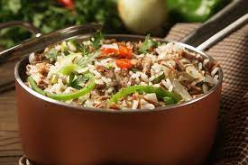
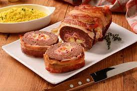

Arroz à Jardineira
- Cebolha e Alho
- Cenoura
- Arroz integral
- Ervilha
- Brócolis cru
Aqueça o azeite, refogue o alho e a cebola. Junte o arroz, o brócolis e a cenoura cortados, deixe em fogo até começar a secar. Junte a ervilha e sirva!
Vinho Quente Na Maçã
- Vinho
- Maçã
- Canela em casca
- Açúcar
Reserve o vinho e adicione os demais ingredientes em uma panela ao fogo com água, mexa para dissolver e corte o topo da maçã. Tire a polpa. Sirva o vinho em temperatura ambiente na maçã!

Rocambole de Carne Moída
- Carne moída
- cenoura
- Manteiga
- Tempero verde
Abra a carne temperada numa folha de papel manteiga. enrole a carne com a cenoura e os ovos em forma de racambole. Leve ao forno por 30 minutos, e por fim sirva.